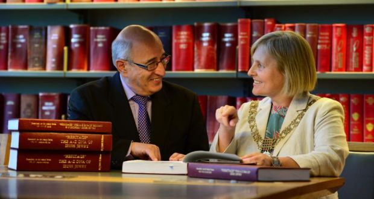

Introduction
After 23 years of family research, I am reminded of the following
statements:
- “If we knew what it was we were doing, it would not be called research.”
— Albert Einstein, 1879-1955.
-
“If I don’t do it, who will do it?
And if I don’t do it right now, when shall I do it.
But if I only do it for myself, what am I?”
— Hillel, 110 BCE - 10 CE.
What started with a £10 family tree program and quest to learn about
my JACKSON/ZAKS and GAVRONSKY families from Lithuania who arrived in
Ireland in the late 1880s, developed into creating a national family tree
containing nearly 60,000 records (as of 05/2017) of people who lived in
Ireland, also their ascendants and descendants, or have some other
connection to Ireland through family association.
This quest for family detail brought me into contact with the Irish
Jewish Museum who were most helpful culminating in the creation of the
Irish Jewish Genealogical Society in 1999.
The research to date is printed in 19 volumes, of which there are
5 copies. The National Library Dublin, the National Archives
Dublin, the Irish Jewish Museum Dublin, and the Genealogical Society
of Ireland Dublin. In addition, the Mayors of the towns of
Cork and Belfast accepted copies of their towns with a special copy
on Limerick at the Limerick Civic trust. The Lord Mayor of
Dublin, accepted 12 volumes on the City's behalf housed in the
Gilbert Library. The 5th set is in my safe keeping.
Details of Publication by Stuart Rosenblatt
- Irish Jewish Memorial Inscriptions, Dolphins Barn, Dublin. 1898-2003.
Vol I, 1st edition 2004. (~3,050 records):
This first volume in the Rosenblatt series took 6 years to compile.
The researcher will immediately find from the alphabetical listing of
3,050 individual interred, the dates of birth, and death, age at death,
memorial inscription, Hebrew name, and Hebrew year of death, section,
row, and plot, females with maiden name and of which tribe Kohen or Levi.
NTS = No tombstone. This volume also covers the Commissioning of
a new cemetery and objections, reminisces and secretarial report.
Part 2. Jewish customs and traditions concerning burial prayer and
mourning.
- Irish Jewish Memorial Inscriptions. Ballybough, Dublin. 1748-1908.
(217 records) and early Synagogues. Vol II, 1st edition 2004.
- Irish Jewish Museum 1992. Vol III, (12,300 listings).
1st edition 2004.
- Belfast Irish Jewish Memorials. 1873-2003. Vol IV, 1st edition 2004.
(1,670 records) birth, (1779 records), marriage, (1093 records),
census 1901 & 1911, & school records).
- Alien Registration 1914-1922. Dublin Non-National, Jewish extracts Vol V.
1st edition 2005.
- Ada Shillman’s (midwife) 866 Birth Records Dublin. 1896-1908. Vol VI.
1st edition 2005. (Combined with Vol 5)
- The Hebrews of Limerick 1904. Vol VII. 1st edition 2005
(census 1901 & 1911, school marriage, & burial community records &
Limerick Trust papers).
- The Hebrews of Cork. Vol VIII. 1st edition 2005
(birth, marriage, death, school, community, census 1901 & 1911 records).
Cork is very fortunate to have as their representative Freddie Rosehill
on of the remaining 3 original Corkonians (2010).
Without his help this volume would not have seen the light of day nor be
so comprehensive of this once early and vibrant Jewish community.
Today there is little left by record.
The volume combines 1901 & 1911 census records with birth marriage and
death details as well as school entrants.
Copies of original marriage certificates from 1891–1955 as well as certain
family reminisces and family trees.
Detailed community records for people living outside the main towns
of Ireland. The inclusion of the minutes 1898–1947 (the original
is in the Irish Jewish Museum Dublin) makes this a precious document.
- Irish Jewish Marriage Records 1845–2005. Vol 1X. 1st edition 2005.
(10,770 records)
- Jewish Ireland Census 1901 & 1911. Vol X. 1st edition 2006.
(7,340 records).
- School of 9000 Jewish entrants. Vol XI. 1st edition 2006.
- Irish Jewish Gardens of the Dead. Vol XII. 1748-2006. 1st edition 2007.
(4,425 records).
This volume combines the burials from Dublin, Belfast, Cork and Limerick
cemeteries. The fields covered are birth date with location,
cemetery with row section and plot, Hebrew name occupation, father and
mother's name, spouse and maiden name, inscription, cause of death and
notes.
It has burial details of 9,272 of which 6,005 are Irish individuals.
The remaining are details of those who have some connection to Irish Jewry.
The Jewish tradition of burial, prayer and mourning, why tombstones are
erected, weddings in a graveyard are some questions answered.
The 1929 publication of Ballybough Cemetery by Bernard Shillman, B.L with
Crane lane to Ballybough by Timothy Dawson 1973, as well as Care of
graveyard makes this volume invaluable source of combined information.
- Miscellany, of Irish Jewish records. Vol XIII. 1st edition 2008.
This compendium lists occupations, subscription lists, Old Age Home residents,
Boy Scout enrolments, Yahrzeit names, congregation and Ancient Order of
Maccabees memberships with Greenville Hall building fund subscribers 1913.
- Interesting letters of family request and Irish Jewish occupations.
Vol XIV. 1st edition 2008. Combined with volume XIII.
“Sir I have no past” is one of the many letters of family requests.
These letters show the yearning to find the family connections.
“The Irish Jewish occupations” lists the full name, parent’s names,
prime profession / trade, and additional data over 123 pages.
Anne Lapedus Brest edited this compilation.
- “Heritage”. The DNA of Irish Jewry. Vol XV. 1st edition 2008.
(41,500 records including birth, marriage, burial, census, occupation,
addresses, covering 95 fields of information).
This magnum is the Pierce de Resistance, the culmination of every detail
known on any one individual potentially covering 90 fields of information
gathered from the most innocent mention of a fact to the finding of
unknown files.
Each previous volume centred on a particular theme.
The extracts in this tome is the result of 13 years of dedicated
research.
Not only full names also original surname AKA, birth, marriage, death,
census occupations, addresses Alien information, GRO references, titles,
naturalisation, schools attended, professions, cemeteries, cause of
death, tombstone inscription, Hebrew name, Hebrew date of death,
cause of death, Religion, male / female, Kohen or Levi, marriage place
age and condition, Synagogue attended, occupation and business address,
alien information and signature if X and notes.
The information also lists where known parents names maiden name of
mother and spouse/s with dates of birth siblings with married names
and birth details as well as issues (children).
This is a one stop all embracing family quest never performed anywhere
in the world. The whole of Jewish Ireland is covered for the last
350 years and includes those who left these fair shores for pastures anew.
- “Moments to Remember in Jewish Ireland 1999-2009”.
An insight into the thoughts and feelings of Irish Jewish exiles
(2,337 pages). Vol XVI. 1st edition 2009.
This fascinating insight into the thoughts and feelings of Irish Jewish
exiles covers 2,336 pages of reminiscences covering from
“Sand in Sandwiches, Michael Collins, to Why they hate us”.
The articles were originally posted on the Irish Jewish internet site
the Jig and Shalom Ireland. The best were extracted to combine
this moment in Irish life from those who left these shores.
History of Jews in Ireland
The history of Jews in Ireland spans a millennium, and demonstrates
a continual struggle to create a strong and vibrant community.
While there are references to a small group of Jews who arrived in
Ireland in 1079, it seems that the first Jewish community was not
established until toward the middle of the 13th century.
More significant numbers of Jews, particularly Sephardic Jews,
arrived following their expulsion from Portugal in 1497, though the
first synagogue would not be established until 1660.
The first cemetery was consecrated in the early 18th century.
While many people came to Ireland, most did not stay.
In 1871, the Jewish population of Ireland was 258 people.
In 1881, an infusion of English and German Jews brought that number
to 453. That changed when Jews began looking at Ireland,
then part of the British Isles, as refuge from the persecution of
pogrom and anti-Jewish enactments, particularly Czar Alexander III's
May Laws of 1882. This act denied Hebrews entry into many
higher professions and prevented them living in towns and rural areas
of certain sizes and restricted access to commercial opportunities
and most of all the conscription of Jewish boys over the age of 12
into the Russian army for 25 years caused a major upheaval within
the Russian Pale.
By 1901, the number of Jewish residents in Ireland was 3,771.
Of these, some 2,200 lived in Dublin. A further 1,000 entered
Ireland within the following three years. Many of these
immigrants would become peddlers, drapers, tailors, hawkers, coal
merchants, carpenters to name just a few of the many professions
in which these newcomers earned a living.
Development of the IrishJewishRoots website
Having spent time rummaging through old museum boxes (some of which
had not been opened for more than 100 years), I eventually collected
information for 16 distinct datasets, and there was no efficient way
to search these records other than going through each database,
individually.
Fortunately, having met a programmer who developed a program which
recognized certain fields that were common across all databases.
This was further developed by Barry Toomey, who enhanced the program,
thus ensuring the Carousel Program enables 105 areas of data on anyone
individual to be stored and printed in various formats.
The Database
This all-encompassing database includes nearly 60,000 records and
details on famous individuals, such as Rabbi Isaac Herzog (Chief Rabbi of
Ireland, and later Israel), his son Chaim Herzog (who would become
President of Israel), Ettie Stinebger (the only known Jewish person
murdered at Auschwitz), and Suzi Diamond and Tomi Reichental (Holocaust
survivors) and thousands of others.
The database incorporates data from a variety of sources, including:
- Alien Registration Records 1914-1922: Records from non-naturalized
citizens who had to submit documents to the local police department
in Dublin.
- Ada Shillman Midwife Records: Records from a journal detailing the
dates of birth and the amounts paid for Ada Shillman’s services
as a midwife. Some records also include the name and address of
the parents, along with the maiden name of the mother.
- Irish Census 1901 and 1911: More than 8,000 records
- School Records: More than 10,000 school records.
- Naturalisation records for 1870–1912: 411 records.
A huge source of information, as these record provide town of
birth, names of parents, etc.
- Death records
- Religious records
- Marriage records: Marriage records from 1845 to the present day
are recorded with date age and condition (spinster, bachelor, widow,
widower, minor (under 21) address occupation father's name and occupation.
Some Ketubas have been found with Hebrew names, addresses.
These types of records can often offer a comprehensive insight where
people lived at that moment and time which will match an event in
their lives.
- Occupation: In addition to their genealogical value, occupation
records offer insight into how family member’s occupation changed
over time.
- Rates: Probably one of the most overlooked avenues are the Rates books
listing the people living in a particular address.
- Voter Registration: The voters registers where with the initial,
surname and street name opened details of other family members
living at the same address whom were unknown to the researcher.
About Stuart Rosenblatt

Stuart Rosenblatt P.C. FGSI, president of the Genealogical Society of Ireland,
and Lord Mayor of Dublin Críona Ní Dhálaigh with the genealogical lists at
Dublin City Council’s Library and Archive on Pearse Street. August 26, 2015.
Photograph: Dara Mac Dónaill/Irish Times.
Stuart Rosenblatt, Dublin based genealogist and social historian, has
amassed an enormous collection of the archival heritage of the Irish
Jewish Community spanning approximately three centuries and containing
details of nearly 59,000 (2017) individual records. He has collated this
information in nineteen huge bound volumes which he has donated to the
National Library of Ireland, the National Archives of Ireland, the
Genealogical Society of Ireland and the Irish Jewish Museum in Dublin.
This unique project has taken Stuart over twenty years and brought
him to every city, large town and county in Ireland in the quest for the
archival heritage.
In 2013, Stuart Rosenblatt was made a Fellow of the to the College
of the Genealogical Society of Ireland for his “indefatigable work”
on Irish Jewry.
In 2015, he was elected President of the same organization.
He has served as a representative to various events for the Cork
Jewish community and the Jewish Genealogical Society of Great Britain,
among others. He has spoken extensively and is available for
speaking engagements.
He feels that having an opportunity of sharing his work with
JewishGen researchers is indeed an honour. In this regard,
any person who makespersonal contact with him either by phone
+44 (0) 7889794757 or email srosenblatt@irishjewishroots.com
will not be charged to have their family details.
As he says “It is a two way affair” where he will update
current family details for posterity.
“What a person has done with their life is history:
what they set inmotion is a legacy. I leave a
‘living legacy’ stretching beyond my lifetime that will bear fruit
which I cannot now imagine.”
Stuart Rosenblatt PC FGSI
May 2017
Praise for Irish Jewish Roots
- My name is Todd Knowles and I am a member of the staff at
the Family History Library in Salt Lake City, Utah.
I have just finished reading the Mar 17, 2013 article
in "The Times of Israel" about your great work.
In various trips I have taken to both Ireland and England,
I have heard wonderful things about the database and your
efforts, you have been very instrumental in helping many
families. I just wanted to add both my congratulations
to you and also my thanks for the great work.
What an incredible blessing you are to so many.
All my best, W. Todd Knowles.
- Stuart, You have moved me to tears, given the document that shows the
next generation of my family. I am sure you understand. It must have been
nerve racking for Rose and Henry to have to be investigated by the
immigration personnel, wondering why and if they would be sent back. I
cannot imagine the terror. i cannot think of how long or even if I
would have found it without your help. I am sure other Jews with roots in
Ireland, albeit however short, must feel the same about your enduring
work. Denni Ann.
- I am very impressed with your project and it could only have been a
labour of love. It is as the say "A Great Credit to you.”
Eddie Murphy.
- The volume you so kindly presented to the Community is a veritable
encyclopaedia of Northern Ireland Jewry and will be an invaluable source
of reference for many generations to come. Sincerest thanks from me to
you for your amazing work & commitment. Gerald Steinberg.
- My wife and I want to thank you so much for the time we spent
together with you on our journey to Dublin. Not only was it educational,
but also personally rewarding to meet someone like you who has dedicated
his life to such a fantastic endeavour.
It was an honour to meet you. Howard Cohen.
- What a wealth of information you have gathered and put into this
marvellous book about the entire Irish Jewish] community, so much value,
not only to those reading it now. But for generations to come.
Anne Lapedus.
- There are no words to convey the magnitude to the task you have
undertaken. Julie Marcus.
- Thank you for the vehement commitment you have demonstrated.
Moreover, future generations will be able to access data about their
lineage firmly planted in the Irish Jewish community.
Sheila Pearlman.
- The Cork Hebrew Congregation both past and present whose history you
preserved factually and correctly with a patient labour of love - we will
always be deeply indebted to you. Freddie Rosehill.
- Stuart: My wife and I want to thank you so much for the time we spent
together with you on our journey to Dublin. Not only was it educational,
but also personally rewarding to meet someone like you who has dedicated
his life to such a fantastic endeavour. It was an honour to meet you. I
hope that someday, you can journey to Atlanta and we can reciprocate with
our own hospitality.
Howard A. Cohn, MBA, PFS Syrmna Georgia USA.
- Dear Stuart, You have solved a mystery! My family was wondering why
the bride's sister-in-law, Edith Jackson, my great-grandmother, did not
accompany her husband, Asher, to the wedding. Thanks to your providing
the date of the wedding, the answer is that Edith was at home with her
new-born son, my grandfather. David Jackson.
- Congratulations on the tremendous honour of being named President
designate for the Genealogical Society of Ireland. I expect that the
Irish take their genealogy very seriously. It is a testament to your
diligent scholarship that despite your lack of deep ancestral roots in
Ireland that you were elected to that position.
Kind regards, Nat.
- Dear Stuart, What a pleasure for Maris & I to be with you, Beverly &
Sonia on Sunday. The volume you so kindly presented to the Community is
a veritable encyclopaedia of Northern Ireland Jewry and will be an
invaluable source of reference for many generations to come. Sincerest
thanks from me to you for your amazing work & commitment.
- I am not used to getting such a prompt response, never mind even a
response at all, to any requests I make & here you are sending the
requested copy from the front section of your book right away. Again,
much appreciated & thank you. Please do let me know in advance when you
are next to be in Belfast so we may make arrangements to extend some
hospitality. Kind Regards, Gerald.
Searching the Database
This database is searchable via the JewishGen
United Kingdom Database.
Last Update: 2 Apr 2018 by WSB